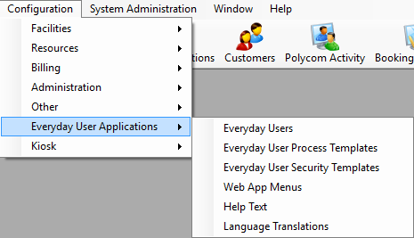

This section guides you in configuring elements for EMS "Everyday User" applications, under Configuration > Everyday User Applications.

Everyday User Applications = EMS Web App, EMS Mobile App, EMS for Outlook, EMS Kiosk, EMS Glance
Settings in this area of EMS Desktop Client control features and behavior for these applications:
EMS Web App is an optional web-based application that EMS users can use to view EMS events, and if allowed, to submit and manage reservations. As the EMS administrator, you are responsible for setting up and maintaining the necessary components for this module, including defining users, security templates, process templates, menus and links, and help text.
The Display to Everyday User (DEDU) settings control whether booking details appear in the Browse Events section of the EMS Web App. For a booking to appear on Browse Events, the Event Type, Status, and Room for that book must have DEDU enabled. See Also Configure Rooms, Configure Event Types, and Configure Statuses.
If one of these properties (Event Types, Rooms, Statuses) does not have DEDU enabled, then the booking will not appear on Browse Events.